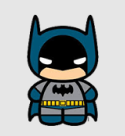

CURRICULUM VITAE DE BRUCE WAYNE
DATOS PERSONALES
- Nombre completo: Bruce Wayne
- Fecha de nacimiento: 01/05/1939
- Lugar de nacimiento: Gotham City
FORMACIÓN ACADÉMICA
1956-1961:Universidad del espantapájaros
Licenciatura en aeronautica
1952-1956:Secundario Gotham
Bachiller con especialización en trucos
EXPERIENCIA LABORAL
1975-1985:Desocupado
Sin trabajo porquer se me rompió el batimovil
1965-1975: Cazavillanos y demás chusma
Atrapé a Gatubela a joker a Victor Fries lo dejé porque se me congeló la capa
1962-1965:Aprendiz de superhéroes
Hice pasantía con Superman. Opté por usar mascara porque no pude aprender a peinarme el rulo